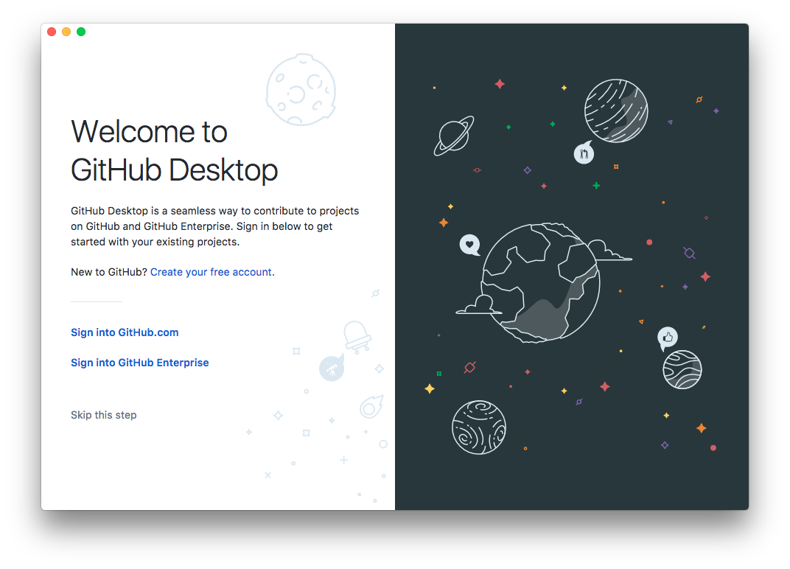
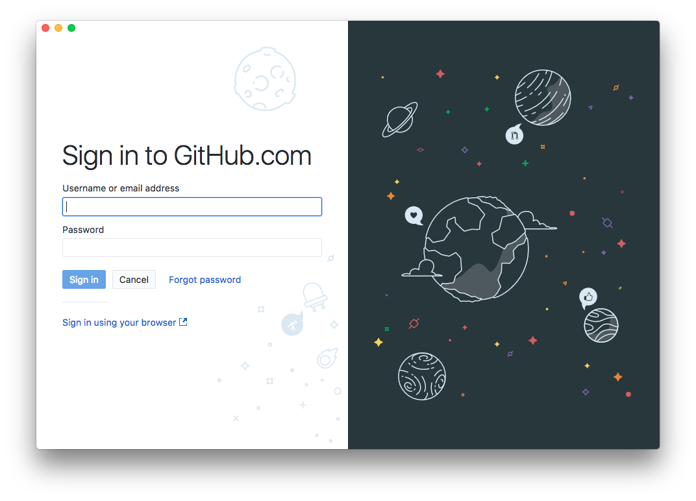
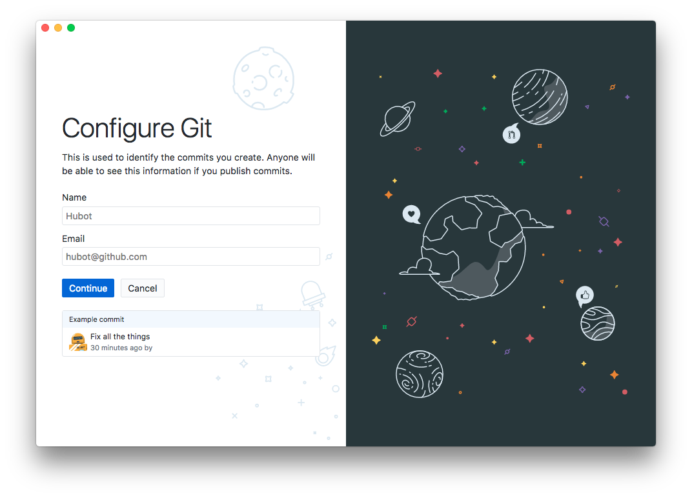
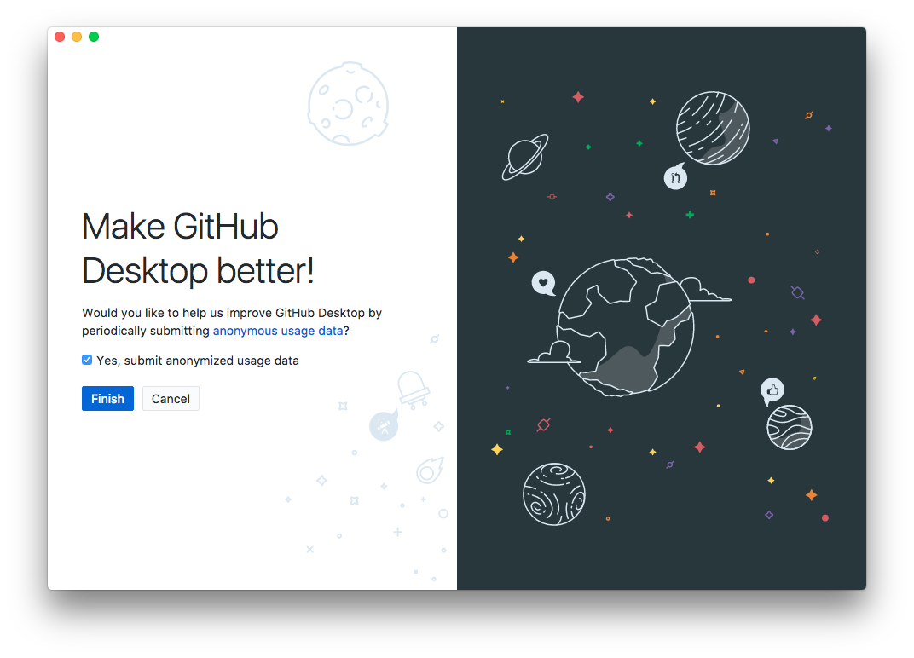
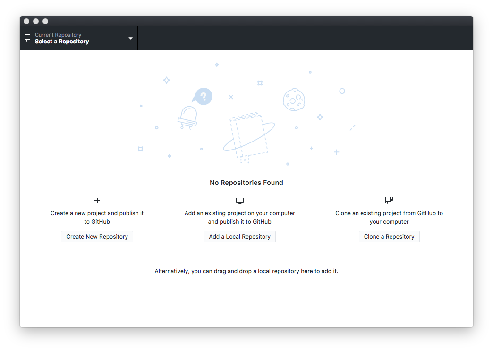
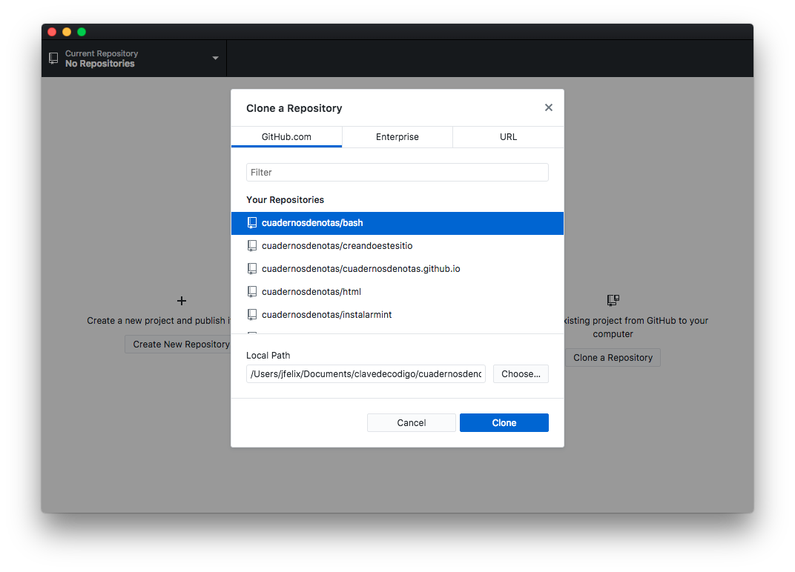
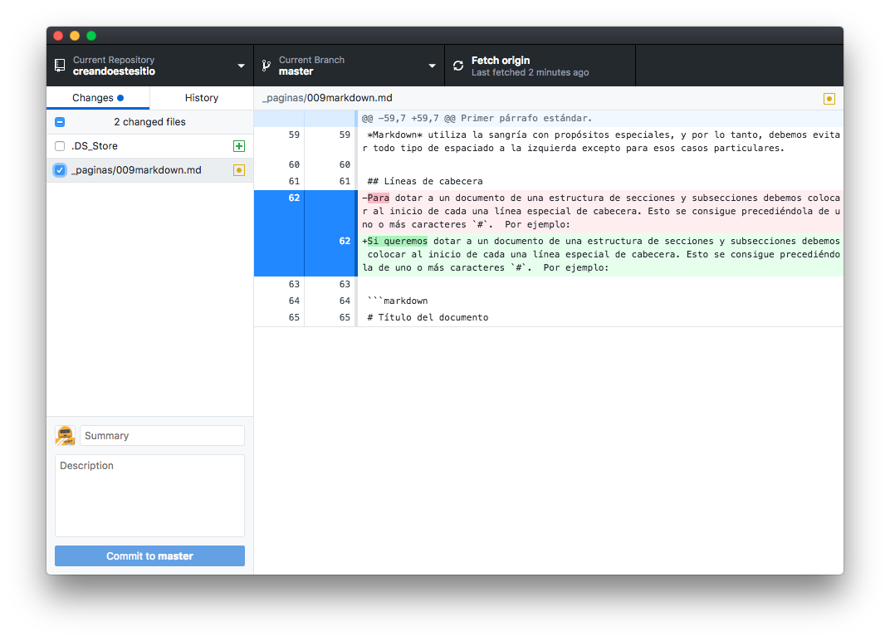
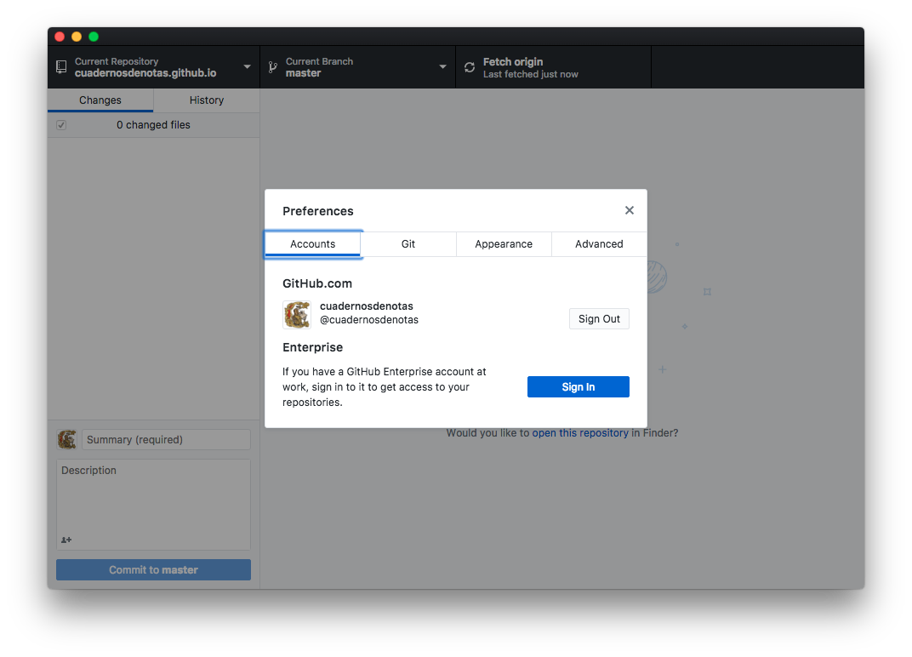

Github Desktop
Hasta ahora hemos visto como darnos de alta en GitHub, crear documentos y páginas web. Pero la edición realizada directamente en la plataforma, no solo consume los recursos de la misma, sino que no permite la existencia de ficheros privados, pruebas, borradores, y un largo etcétera.
Lo más recomendable es utilizar nuestro ordenador para montar todas las piezas del futuro sitio web, y seguidamente subir los archivos mediante la opción Upload Files u otro mecanismo similar. En este capítulo veremos como controlar lo que vamos subiendo, y tener sincronizados ambos repositorios de documentos, el local en nuestro ordenador y el remoto en GitHub.
Acerca de git
GitHub es una plataforma para el trabajo colaborativo, lo que implica que cuando varias personas trabajan en un proyecto, resulta necesaria alguna herramienta para sincronizar las modificaciones en los archivos. Para lograr este propósito, GitHub utiliza un programa llamado git. Es una herramienta creada en 2005 por Linus Torvalds para gestionar de forma organizada el desarrollo de Linux, y suele incluirse de forma estándar en algunos sistemas operativos. Se distribuye como software libre desde su página web, donde lo encontraremos disponible para Linux, Windows, Mac OS y UNIX.
Aunque nuestro proyecto sea individual, git nos puede servir para simultanear lo que editemos en nuestra máquina local y los cambios que hagamos directamente en el repositorio de GitHub, actualizando los archivos con la versión más actual cuando no coincidan. En principio resulta conveniente tener el entorno local como zona de trabajo, y el remoto para publicar los archivos definitivos.
Git es un software que tendremos que instalar si no lo tenemos ya. Podemos comprobarlo abriendo un terminal de comandos en nuestra máquina y ejecutando:
git --version
Las operaciones de sincronización se llevan a cabo introduciendo comandos en la consola del sistema operativo. Véase por ejemplo como subir un repositorio de documentos a GitHub. En esta otra página tenemos un resumen de los comandos más útiles.
El uso de la línea de comandos resulta muy adecuado para usuarios con cierto nivel técnico, pero otras personas pueden sentirse algo intimidadas. Para los usuarios de Windows y MacOS, GitHub pone a su disposición un programa gráfico para controlar la sincronización de documentos. Se llama “GitHub Desktop”, y vamos a examinarlo en este capítulo.
Instalando el programa
GitHub Desktop se encuentra disponible para su descarga aquí. Tenemos la guía de usuario en esta otra página.
Al ejecutarlo por primera vez aparece la siguiente ventana:

Si no tenemos una cuenta GitHub, pulsando en el enlace create your free account se abrirá la ventana del navegador web mostrando página de alta de GitHub. Como seguramente ya tendremos una cuenta, vamos a pulsar en el enlace Sign into GitHub.com. Introducimos nuestro nombre de usuario y contraseña:

GitHub Desktop es una forma gráfica de utilizar Git para subir archivos. En el repositorio remoto de GitHub se mostrará un historial de cambios indicando quien es el usuario que los ha hecho. Tenemos que configurar Git para que en las transacciones de actualización de ficheros incluya nuestro nombre y correo web. No tiene por que coincidir con los datos de nuestro perfil de usuario GitHub, aunque de todas formas, se verificará que el correo que facilitemos es real.

¿Queremos que GitHub analice nuestras operaciones para mejorar el servicio? Marcar la casilla si lo deseamos y pulsar en el botón Finish para finalizar este proceso de configuración inicial.

Usando GitHub Desktop
Una vez finalizada la configuración de GitHub Desktop tenemos la ventana principal con el proyecto en el que estamos trabajando (que por ahora está en blanco). El menú File nos da tres opciones:
- Crear un nuevo proyecto en el entorno local y subirlo a GitHub
- Abrir un proyecto existente en el entorno local y subirlo a GitHub
- Descargar un proyecto ya existente en el repositorio de GitHub
Estas tres opciones también se muestran como iconos de escritorio en la ventana en blanco de GitHub Dektop

Si optamos por descargar un proyecto ya existente, se mostrará una lista de los que tenemos en nuestra cuenta de usuario GitHub:

Seleccionar un repositorio y una carpeta de nuestra máquina donde guardar la copia. Al pulsar en el botón [Clone] se realizará la descarga de ficheros.
Sincronizando archivos
Una vez creado un proyecto nuevo o bajado uno del repositorio remoto, este es el aspecto de la ventana de trabajo:

En el panel izquierdo tenemos una lista de los cambios realizados en el entorno local. Los archivos están marcados con iconos de colores:
- amarillo (*): archivo modificado
- rojo (-): archivo eliminado
- verde (+): archivo nuevo
También podemos marcar/desmarcar los archivos a sincronizar. Si hay algún archivo o carpeta que queramos excluir permanentemente del proceso de sincronización, incluirlo en el fichero .gitignore, como se explica más adelante.
Seleccionando un archivo de la lista, en el panel derecho se mostrará su contenido, señalando en color rojo el texto eliminado y en verde lo añadido.
Una vez revisados los cambios, para actualizar el entorno remoto debemos introducir un comentario en el apartado Summary. Ese texto es obligatorio y se mostrará en el historial de cambios. Pulsar en el botón Commit para guardar la lista de cambios a realizar (nótese que este botón esta desactivado hasta que introduzcamos algún comentario).
La lista de cambios a sincronizar se guarda en una carpeta oculta llamada .git. Ahí es donde se almacena toda la información necesaria para controlar la sincronización del proyecto. Mientras no subamos los cambios al entorno remoto, tendremos un nuevo botón Undo que nos permite descartar lo hecho.
Para subirlo, nótese que en la barra superior, en la zona de la derecha, tenemos un botón que puede mostrar:
- Fetch - Enlazar con el repositorio remoto
- Push - Subir los cambios realizados en el repositorio local
- Pull - Hay cambios realizados en remoto. Pulsar aquí para bajarlos y actualizar los archivos locales.
Nota:
Si en nuestro perfil de usuario GitHub tenemos el correo electrónico marcado como “privado”, no nos dejará subir cambios en ese estado. Tendremos que ir a GituHub, entrar en nuestro perfil, apartado “emails”, y configurar las casillas:
- Keep my email address private
- Block command line pushes that expose my email
Excluyendo archivos
Nótese que en la lista de documentos a sincronizar pueden aparecer ficheros o carpetas que no deseamos subir al servidor. Por ejemplo:
- si instalamos Jekyll en nuestro ordenador y lo utilizamos para generar sitios web de pruebas en el entorno local, la carpeta
_sitecontiene las páginas html generadas. El contenido de esa carpeta no hay que subirlo porque GitHub compilará y publicará su propia versión (a menos que queramos utilizar el resultado de la conversión hecha en entorno local). - el archivo
.DS_Storees un recurso interno de los ordenadores iMac para guardar la configuración de la carpeta. No tiene nada que ver con GitHub y no lo vamos a subir (de hecho es un asunto reportado como riesgo de seguridad en los Mac). - el archivo de configuración
_config.ymlque yo utilizo cuando uso Jekyll en mi ordenador, es diferente en ambos entornos, con la configuración adaptada a cada uno.
Nótese que en los sistemas operativos tipo UNIX (linux, mac) los archivos ocultos se identifican porque llevan un punto como prefijo.
Para excluir estos archivos de la configuración, añadimos un archivo .gitignore con la lista de exclusiones:
_site/* .DS_Store _config.yml tmp/*
El panel izquierdo de GitHub Desktop nos dará la pista de que archivos son los que tenemos que incluir.
¡Cuidado!
Si modificamos el mismo archivo en remoto y en local, tendremos un conflicto que habrá que resolver, porque git no podrá establecer cual es la versión buena. Se recomienda evitar este tipo de situaciones.
Cambiando de proyecto
Si tenemos acceso a más de una cuenta en GitHub, podemos pasar de una a otra mediante el menú Preferencias > Accounts, haciendo un Sign outen la cuenta actual y un Sign in en aquella a la que nos queramos conectar.
Para cambiar a otro repositorio distinto de aquel con el que estamos trabajando, el primer paso es comprobar que lo tenemos en ambos entornos. Si se trata de un proyecto remoto que no hemos bajado todavía, hacerlo con el menú File. Si los proyectos están en ambos entornos, para cambiar de un repositorio a otro pulsar en la lista desplegable Current Repository en la barra superior izquierda de GiutHub Desktop.
Configuración
El menú Preferencias permite:
- Conectarnos / desconectarnos de nuestra sesión en GitHub. Podemos tener varias cuentas de usuario y aquí es donde saldríamos de una para entrar en otra.
- Configurar nuestra identificación Git: nombre del usuario que hace las modificaciones y correo electrónico.
- Pestaña “Advanced”: editor de texto asociado, pedir confirmación para los cambios, etc.
